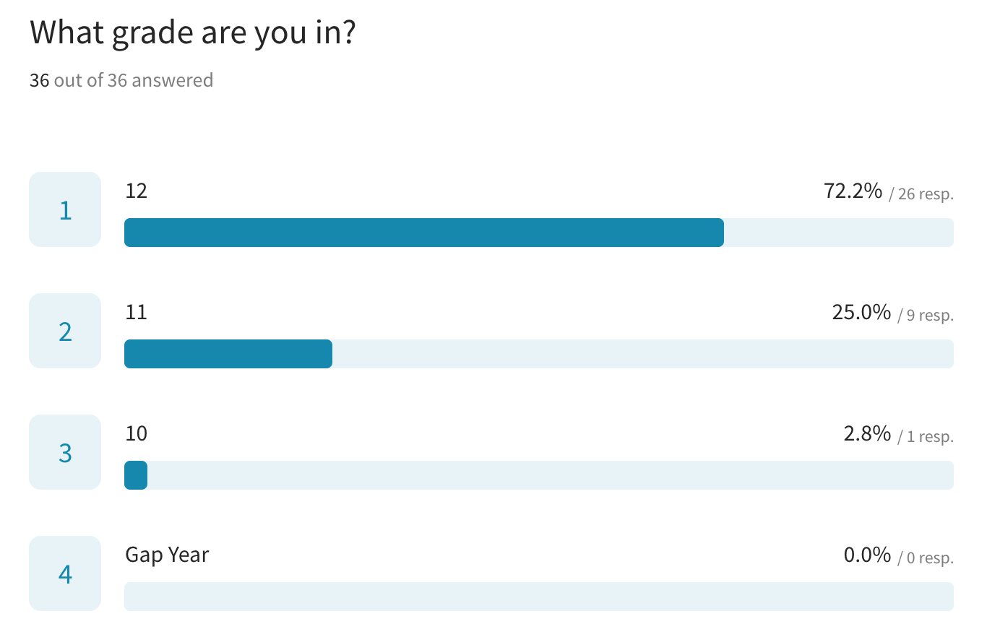
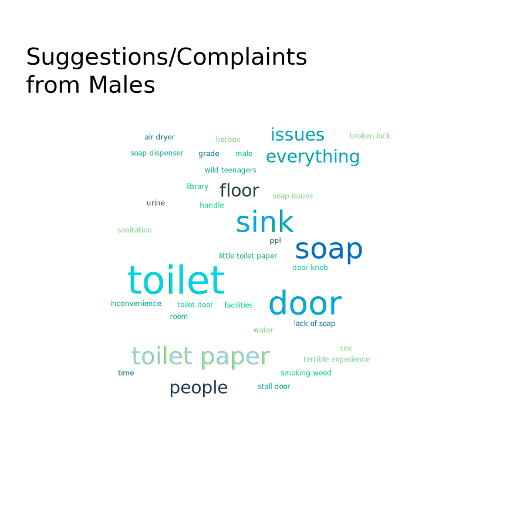
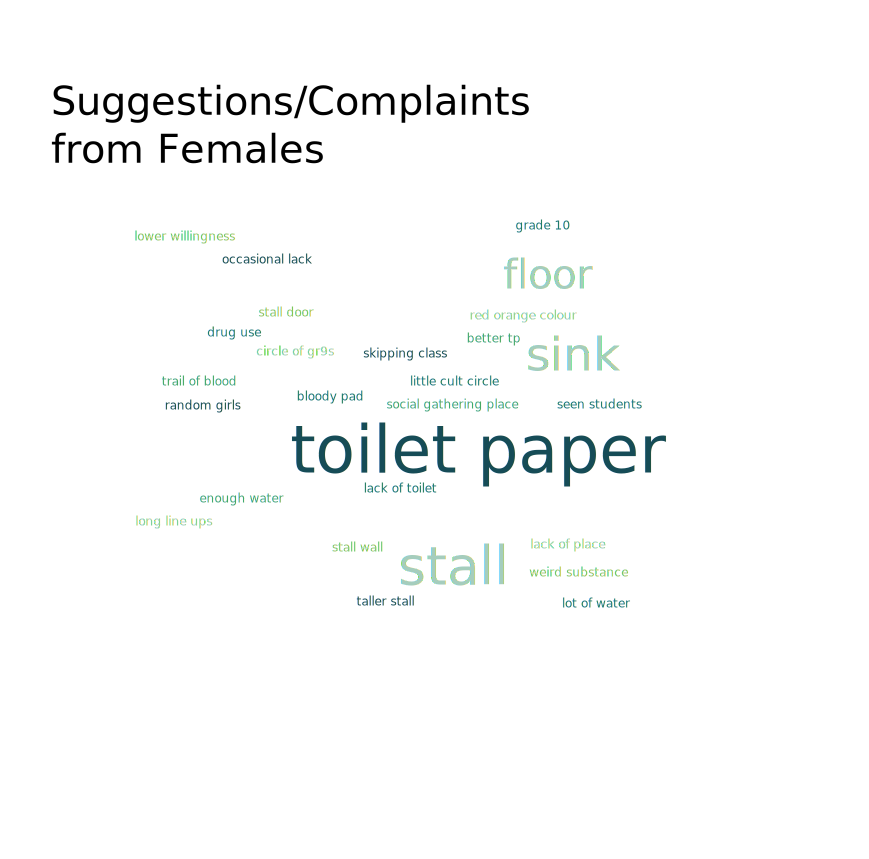

AYJ Washroom Survey Results
A questionare was devloped to evaluate student perception of AYJSS's washrooms. A total of 36 students completed the survey, with the majority of sample representation from grades 11-12. A breakdown of the respondent population is shown below.

Most Common Suggestions & Complaints
Students were given a free-response to list their concerns and suggestions for the washrooms. The submissions were categorized by genders and analyzed by an AI word cloud generator (MonkeyLearn). The results are shown below.
Quantitative Rankings
Respondents were asked to rank their feelings about certain prompts on a scale of 1 to 7. The first ranking asked respondents how they felt about the supply of soap in the washrooms (1: there's never soap; 7: endless soap). The second asked about the supply of toilet paper. The third asked how big of an issue drug usage was in the washrooms (1: no issue; 7: fix it ASAP).
A summary of the quantitative ranking results can be viewed here.